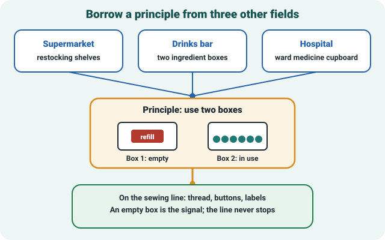

K4 · Creativity and improvement › Level 4 Proficient
Borrow ideas from other fields and lead an improvement project to a measured result
A Level 4 (Proficient) lesson. How to plan a project is covered in Run a lean project. How to win over stakeholders is covered in Persuade without authority.
1. Objectives
- Rewrite the problem in general form, then find 3 other fields that have faced the same problem.
- Lead a 5-step improvement cycle, through to a decision to keep, adjust or drop.
2. Retrieval warm-up
- What are the 4 parts of a one-page improvement proposal?
- Why must you measure the current state before a trial?
Answers
- Current state; solution; benefit; how to test it.
- Without numbers from before, you cannot prove an improvement.
Review: Propose a small improvement.
3. Explanation
After years in one industry, we tend to look for solutions inside that industry. But many problems were solved long ago in other fields. Senior people who are good at improvement often ask: "Who else has faced a problem like this?"
Borrowing ideas: 3 steps.
Borrowing ideas from other fields
- Write the problem in general formRemove the industry name. "Loan applications wait too long for approval" becomes "work queuing through many people".
- Find 3 fields with the same problemFor example: hospital triage, fast-food restaurants, airport check-in.
- Extract the principle, do not copy the methodHospitals prioritise by urgency, not arrival time. Where could that principle apply?
Step 3 matters most. Copying another field's method exactly usually does not fit. Borrow the principle, then adjust it for your team's context.
Leading a 5-step improvement cycle. At Level 3, you wrote a proposal. At Level 4, you lead the whole cycle until there is a result. The cycle is similar to the Plan–Do–Check–Act cycle familiar in quality management.
1. Baseline with numbers 2. Hypothesis 3. Small trial 4. Measure and decide 5. Standardise
Write the hypothesis like this: "If we do X, measure Y will change from A to B." Write it before the trial, so you cannot quietly move the target afterwards.
The decision has 3 options: keep, adjust and test again, or drop. Dropping is also a good result if it is backed by numbers.
Standardising is the step people forget. Rewrite the process, train the people doing it, and schedule a check after one month. Without it, people slowly drift back to the old way.
Bring the people affected in early. Invite them to choose the measure with you. Say clearly that the trial has an end date and can be reversed. People who help design a trial are usually more willing to try it.
4. Workplace example
Hypothetical scenario. Carmen is a senior process engineer in a garment factory. Sewing lines often stop and wait because they run out of small materials: thread, buttons, labels.
- General form: "many points using small supplies, which run out without warning".
- Other fields: supermarkets restocking shelves; a drinks bar using two ingredient boxes in turn; a hospital ward's medicine cupboard.
- Principle borrowed: use two boxes. When the first box is empty, that is the signal to fetch more. Meanwhile, the line uses the second box.
Carmen leads the improvement cycle:
- Baseline: in 2 weeks, the line stopped 9 times for missing materials (hypothetical).
- Hypothesis: with two boxes on line 3, stops will fall below 3 in 2 weeks.
- Small trial: line 3 only, for 2 weeks. The line supervisor helps choose how to count.
- Measure and decide: 2 stops. Decision: keep it, and adjust the size of the label box.
- Standardise: a one-page instruction, rolled out to 2 more lines, with a check after 1 month.

Why this works: Carmen borrows the principle, not the whole model. The hypothesis has a number before the trial. The line supervisor is involved from the start.
5. Practice
Hypothetical scenario. You are a senior specialist in the customer care team of an insurance company. Callers are often passed through 2–3 people before reaching someone who can solve their problem.
Write the problem in general form, find 3 other fields, extract one principle, and write a hypothesis.
Hint 1
General form: requests pass through many stages before reaching the right person. Which fields must sort requests right at the start?
Hint 2
Think of a hospital information desk, a hotel reception desk, an airport information desk.
Model answer
General form: requests pass through many stages because they are not sorted at the first point of contact.
Other fields: hospital triage desk; hotel reception; airport information desk.
Principle: the first person asks 2–3 fixed sorting questions, then transfers the caller straight to the right team.
Hypothesis: if call handlers use 3 sorting questions, the share of calls transferred more than once will fall clearly within 2 weeks. Before the trial, measure the current share and write down the target number.
6. Self-check
Choose an answer. Every option has an explanation.
Question 1. "Online orders arrive late because the warehouse takes a long time to find items." What is this in general form?
-
Not quite. This is a judgement about people, not a problem in general form.
-
Correct. Correct. It removes the industry and keeps the essence. Libraries and pharmacies face this problem too.
-
Not quite. This is a solution, not a description of the problem.
Question 2. Why borrow the principle instead of copying another field's method exactly?
-
Not quite. Copyright is not the main reason. A method from another context usually does not fit.
-
Correct. Correct. Borrowing the principle and adjusting it fits real conditions better.
-
Not quite. Not true. Other fields may have solved the problem very well.
Question 3. Why write a hypothesis with a number before the trial?
-
Correct. Correct. Writing it first keeps the evaluation honest, even when results disappoint.
-
Not quite. Appearance is not the point. The point is an honest evaluation.
-
Not quite. You do not have to hit it. The number helps you compare and decide to keep, adjust or drop.
Question 4. The trial worked, but a month later everyone is back to the old way. Which step was skipped?
-
Not quite. Without this step, you would not know whether the trial worked.
-
Correct. Correct. Without rewriting the process, training people and checking again, the old way returns.
-
Not quite. A hypothesis helps evaluate the trial. It does not keep the new way in place.
Question 5. The line supervisor is reluctant to try the new way. What helps most?
-
Not quite. An order may work, but the supervisor will give little support when problems come up.
-
Correct. Correct. People who help design a trial and see low risk agree to it more easily.
-
Not quite. Acting behind the backs of people affected destroys trust.
7. Reflection
- Which problem has your team tried to solve many times without success? Write it in general form.
- Did your team's last improvement include a standardising step? What was the result after a month?
8. Real-world application
Over the next 7 days, choose one of your team's problems. Write it in general form and find 3 other fields. Invite one person affected to choose the measure with you. Write a hypothesis with a number before the trial.
Level of evidence. The 3 borrowing steps and the 5-step cycle are a method proposed by this site. The Plan–Do–Check–Act cycle is widely used in quality management; this lesson only refers to its name and copies no document.
9. Metadata
| skill | K4 · Creativity and improvement |
|---|---|
| level | Level 4 · Proficient |
| group | N4 |
| framework_map | WEF: Creative thinking; CSfW: 3d Create and innovate; SkillsFuture CCS: Creative Thinking; EntreComp: Creativity; Valuing ideas; Mobilising others (reference only) |
| original | Vietnamese version |
| updated | 2026-11-14 |
Finish the lesson
Mark it as done and the site suggests reviews after 1, 3 and 7 days. The data stays on your device only.
Suggested reviews: